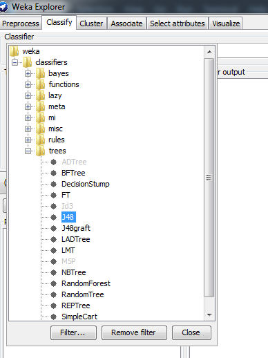
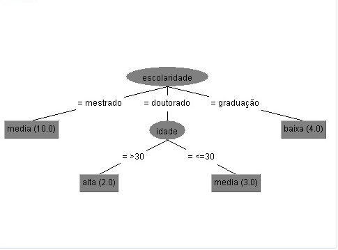

Weka é um Software livre do tipo open source para mineração de dados, desenvolvido em Java. Ao longo dos últimos anos se consolidou como a ferramenta de mineração de dados mais utilizada em ambiente acadêmico. Embora a ferramenta possua como ponto forte a mineração de classificadores em bases de dados, também pode ser utilizada para executar outras tarefas, especialmente a mineração de regras de associação. A ferramenta Weka trabalha com arquivos de entrada no formato ARFF, que corresponde a um arquivo texto contendo um conjunto de observações, precedido por um pequeno cabeçalho. O cabeçalho é utilizado para fornecer informações a respeito dos campos que compõem o conjunto de observações. É importante observar que o formato ARFF foi originalmente proposto para a mineração de classificadores; no entanto, ele pode ser "adaptado" para a mineração de regras de associação. Essa adaptação resulta em uma base de dados com uma estrutura um pouco esquisita, porém capaz de ser manipulada pela ferramenta.
Exemplo:Cabeçalho:
@relation "Transacoes" - Declaração Da Redação
@attribute I1 {y, n}
@attribute I2 {y, n}
@attribute I3 {y, n}
@attribute I4 {y, n}
@attribute I5 {y, n}
@attribute I6 {y, n}
Dados:
@data
y,y,?,?,y,?
?,y,?,y,?,?
?,y,y,?,?,?
y,y,?,y,?,?
y,?,y,?,?,?
?,y,y,?,?,?
y,?,y,?,?,?
y,y,y,?,y,?
y,y,y,?,?,?
As declarações dos atributos são feitas através de uma sequência de linhas @attribute. A ordem da declaração indica a posição de cada atributo na seção data. A base de dados é colocada abaixo do parâmetro @data. Consiste em uma lista de todas as instâncias com os valores dos atributos para cada instância, separados por vírgulas. Cada um em uma linha única. Os atributos devem aparecer na ordem em que são declarados no cabeçalho.
É uma ferramenta utilizada nas tomadas de decisão com múltiplas variáveis e com múltiplos objetivos. Composto de ações que resultam em possíveis resultados, dependendo de sua escolha. formato por uma rede que se inicia com uma decisão, e que depois pode terminar tanto de uma forma quando outra, tento nuvens com as escolhas e possíveis opções, ligadas a várias linhas nós que leva tudo à um resultado final. Ou seja, essa ferramenta serve para fornecer para o usuário com uma interpretação mais fácil, formando uma espécie de caminho a ser percorrido para alcançar um objetivo específico.
Quando entrar na página inicial do Weka, e escolher o arquivo desejado, clica em Classify.

Na aba classifier, selecione a opção Choose.

Selecione a pasta tree e modelo J48.
Depois, selecione a opção Use Training Set e aperte Start.

Assim, os dados serão exibidos na aba ao lado.

Para visualizar a árvore de decisão, clique no botão direito no arquivo selecionado, na aba Result List, e selecione Visualize Tree.

E assim, a árvore de decisão será exibida. Exemplo de uma árvore de decisão.
Como ela serve principalmente para organizar ideias e tomar decisões ela pode servir para por exemplo, em uma companhia de veículos que planeja desenvolver uma nova marca de carro, os funcionários utilizam uma árvore de decisão para decidirem um possível nome e modelo, e chegar numa conclusão mais benéficente para a companhia. E quando é utilizado na área da computação pode-se utilizar um desses dois tipos de métodos: Método Supervisionado: com uma análise baseada em um conjunto de informações. Esse método possui duas subcategorias: Classificação: recebe um dado e caracteriza de acordo com os padrões pré-estabelecidos. Quando as questões podem ser respondidas Sim ou Não. Regressão: idêntico ao outro método porém, quando as perguntas são mais específicas, tipo "Quantos anos você tem?" ou "Quantas pessoas trabalham por aqui?". Método Não Supervisionado: ela não é pré-informada e organiza as informações de acordo com as características idênticas entre elas.
Neste cenário tem um cinema com vários filmes em cartaz, e 7 pessoas vão a esse cinema ver um filme, o Suporte, cálcula a quantidade de vezes que esse certo filme foi visto, tipo ação, 7 pessoas vão ao cinema escolher ver um filme, e 4 pessoas assistam um filme de ação, então o Suporte será de 40%, pois de todos os filmes vistos, foi calculado que 40% das pessoas tinham assistido o filme de ação.
Agora quando é utilizado o valor de Confiança, calcula-se quantas vezes um filme foi visto junto à outro filme, por exemplo, tem dois filmes um de comédia e o outro é nacional, é registrado que sempre quando ela que ver um filme de comédia ela quer ver um filme nacional, mas nem todo mundo vê esses tipos de filmes o tempo todo, como na outra situação eram filmes de ação e aventura, 4 vão ver os filmes desses dois tipos de gêneros, mas uma pessoa foi ver um filme com esses dois tipos de gêneros, então o módelo de Confiança conclui que cada 4 pessoas que vão ver um filme de ação ou aventura, uma dessa pessoas decidi ver um filme com os dois gêneros.